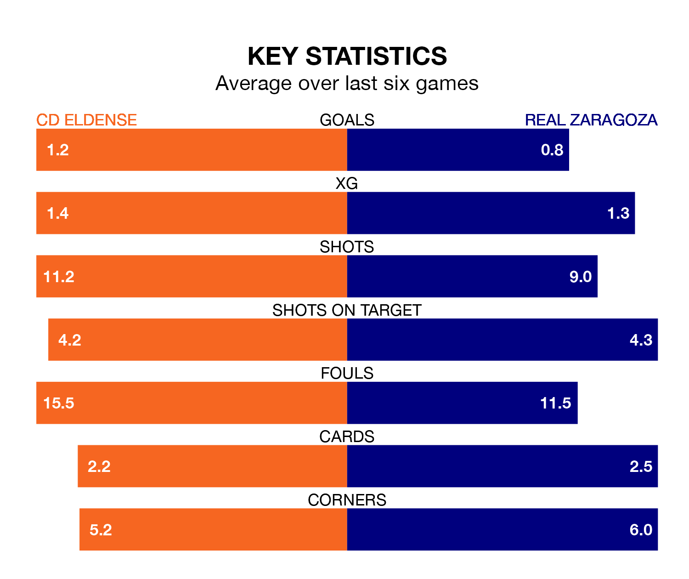

CD Eldense face Real Zaragoza at the Estadio Municipal Nuevo Pepico Amat on late Monday looking to secure a first win in seven Segunda División games.
Eldense have lost two and drawn four matches since they last earned three points – against FC Andorra on November 12.
They face a Zaragoza side who have won one and drawn three over that time.
With 21 goals in 21 games so far this season, Zaragoza are scoring at below the league average rate with 1.0 goals per game. But they are conceding fewer than average too, letting in 21 goals at a rate of 1.0 per game.
Eldense, meanwhile, are above average scorers, with 1.3 goals per game, compared to a league average of 1.2. They have conceded 1.5 goals per game.
The home side are 15th in the table after 21 games, of which they have won six and drawn eight, earning 26 points.
The visitors are one place ahead of Eldense in 14th, with seven wins and seven draws putting them on 28 points.
Eldense's last match was on December 19, a 1-1 draw against Albacete Balompié, with Sergio Ortuño Díaz getting the goal for Eldense.
Zaragoza drew 2-2 with Levante UD last time out, on December 20, with Maikel Mesa Piñero and Victor Carpintero Mollejo on the scoresheet.
Updated: 11:31, 09/01/24